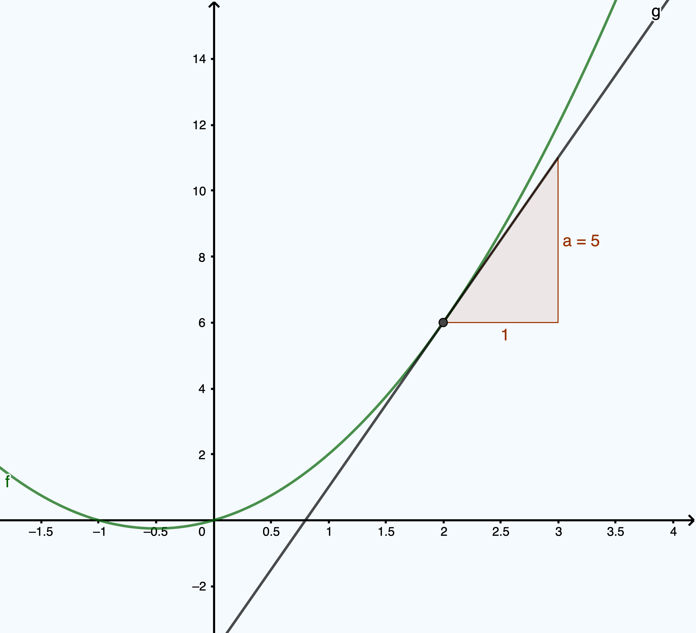

Gjennomsnittlig vekstfart med Python
Contents
Gjennomsnittlig vekstfart med Python¶
Her skal du lære hvordan vi kan bruke Python til å
regne ut gjennomsnitlig vekstfart i et intervall
regne ut gjennomsnitlig vekstfart i mange intervall
illustrere grafisk gjennomsnitlig vekstfart når vi deler opp et intervall i mange små delintervall.
Vi regner ut den gjennomsnittlige vekstfarten¶
I filmen nedenfor viser vi hvordan vi kan bruke regne ut gjennomsnittlig vekstfart i et intervall ved å lage et lite program i Python.
Oppgave 1
Funksjonen \( g\) er gitt ved
Hva er den gjennomsnittlige vekstfarten til \( g\) i intervallet \([-1, 3]\)?
Bruk Python til å regne det ut:
Eksempel på løsning
Vi kan løse oppgave 1 ved å bruke følgende kode:
def g(x):
return 4*1.21**x
m = (g(3)-g(-1))/(3-(-1))
print(m)
Momentan vekstfart¶
Vi har så langt brukt Python til å regnet ut gjennomsnittlig vekstfart i et intervall. Vi har tidligere sett at den momentane vekstfarten i et punkt er stigningstallet til tangenten i punktet. Dette tallet kan vi nå beregne med Python ved å regne ut gjennomsnitlig vektfart i et veldig lite intervall. Vi lar med andre ord \( \Delta x = h\) være veldig liten.
Skal vi for eksempel finne stigningstallet til tangenten i \( x = 2\) til funksjonen \(f(x)=x^2+x\), så regner vi ut \( \dfrac{f(2+h)-f(2)}{h}\) når \( h\) er vedlig nær 0. Vi kan for eksempel bruke \( h = 0.0000001 \). I dette tilfellet blir det
Vi kan si at den momentane vekstfarten er 5 i \( x= 2\).

Merk: Det kunne være fristede å bruke \(h = 0.0000000000000000000001\) for å få et mer nøyaktig svar. Men bruker vi så mange desimaler, så vil måten Python lagrer tall på i minnet spille oss et lite puss.
Oppgave 2
Ole har deltatt på et skirenn. Funksjonen \( P\) gitt ved
viser pulsen hans som prosent av makspuls \( x \) minutt etter starten av skirennet.
Bestem den momentane vekstfarten til funksjonen \( P\) når \(x=5\).
Gi en praktisk tolkning av dette svaret.
Her kan du se et eksempel på hvordan oppgaven med pulsen til Ole kan løses.
Plotte stigningstallfunksjonen¶
I filmen nedenfor viser vi hvordan vi kan bruke Python til å tegne grafen til funksjonen som beskriver stigningstallet til en funksjon.
I filmen ovenfor brukte vi følgende kode for å tegne grafen til stigningstallfunksjonen. Vi brukte da følgende kode:
import matplotlib.pyplot as plt
import numpy as np
h = 0.01
def f(x):
return x**3-3*x+4
def G(x):
return (f(x+h)-f(x))/h
X = np.linspace(-1, 4, 500)
plt.plot(X, f(X), label="f")
plt.plot(X, G(X), label="G")
plt.legend()
plt.grid()
plt.show()
Nå vil vi at du skal prøve selv.
Oppgave 3
Tegn stigningstallfunksjonen til \(f\) når \(f(x)=x^4-x^2\). Bruk x-verdier mellom -1 og 1. Ser du hvor grafen til \( f\) er brattest?
Oppsummering¶
Vi kan bruke Python til å regne ut gjennomsnittlig vekstfart i intervaller. Om bredden \(h\) på intervallet er nær 0, så vil vi få at gjennomsnittlig vekstfart i intervallet \([x, x+h] \) er tilnæret lik stigningstallet til tangenten i \( (x, f(x))\).
Dersom vi lar \( h \) være nær 0, får vi en god tilnærmet verdi for den momentane vekstfarten til \(f\). Denne tilnærmingen blir bedre jo nærmere \(h\) er 0.
Vi kan plotte grafen til stigningstallfunksjonen. Vi kaller denne funksjonen for den deriverte funksjonen til \(f\). Denne funksjonen er nyttig til å utforske når grafen til \(f\) stiger og når den synker. Vi kan også bruke den til å finn topp- og bunnpunkt. Dette kommer vi tilbake til senere.